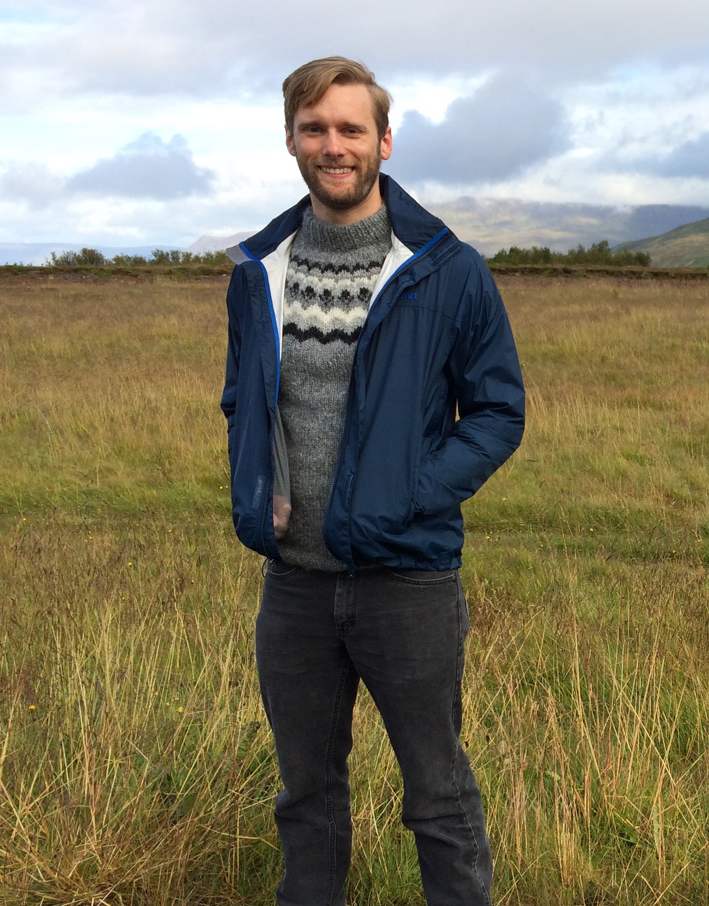

Dr. Edward W. Marshall
Hi there! I am an isotope geochemist who focuses on mantle and deep crustal systems. I'm interested in the generation and recycling of crust on Earth. To learn more about this, I use isotope
Some more details on my recent work can be found on my Research page.
Recently, my collaborators and I have become involved in the development of a light curve extraction and transit searching pipeline using data from the TESS mission in order to find exoplanets that orbit cool, red stars.
Site last updated: June 2020
